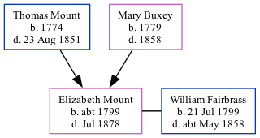

Elizabeth Fairbrass (née Mount) c1799 - 1878
[ Home ] | [ Calendar ] | [ Surnames Index ] | [ Family History ]The child of Thomas Mount (an agricultural laborer) and Mary Buxey, Elizabeth Mount, the four times great-aunt of <a href="I1.html">Nigel Horne</a>, was born in Herne, Kent, England <i>c.</i> 1799<span class="citation">1,2,3,4</span> and baptized there on Feb 24, 1799. She married William Fairbrass (an agricultural laborer) in Sturry, Kent, England on Aug 22, 1819.</p><p>Elizabeth spent all of her life in Kent, England. Throughout her life, she lived in several places around the county: in Bekesbourne in 1841<span class="citation">1</span>; at Bekesbourne Hill, Bekesbourne on Mar 30, 1851<span class="citation">5</span>; in Bekesbourne in 1861<span class="citation">2</span>; and at Beaksbourne Street, Beaksbourne on Apr 2, 1871<span class="citation">6</span>. <p>She died in Jul 1878 in Kent<span class="citation">4</span> and was buried in Bridge, Kent on Jul 22, 1878.
Parents
- Thomas was born in 1774
- Mary Elizabeth was born in 1779
Citations
- 1841 England Census Online publication - Provo, UT, USA: The Generations Network, Inc., 2006.Original data - Census Returns of England and Wales, 1841. Kew, Surrey, England: The National Archives of the UK (TNA): Public Record Office (PRO), 1841. Data imaged from the National
- 1861 England Census Online publication - Provo, UT, USA: The Generations Network, Inc., 2005.Original data - Census Returns of England and Wales, 1861. Kew, Surrey, England: The National Archives of the UK (TNA): Public Record Office (PRO), 1861. Data imaged from the National
- 1871 England Census Online publication - Provo, UT, USA: The Generations Network, Inc., 2004.Original data - Census Returns of England and Wales, 1871. Kew, Surrey, England: The National Archives of the UK (TNA): Public Record Office (PRO), 1871. Data imaged from the National
- England & Wales, FreeBMD Death Index: 1837-1915 Online publication - Provo, UT, USA: The Generations Network, Inc., 2006.Original data - General Register Office. England and Wales Civil Registration Indexes. London, England: General Register Office. © Crown copyright. Published by permission of the Cont
- 1851 England, Wales & Scotland Census - Findmypast (was age 55 and the wife of the head of the household)
- 1871 England, Wales & Scotland Census - Findmypast (was age 72 and the head of the household)
Media
1851 England, Wales & Scotland Census Transcription - GBC-1851-0005791027
1851 England, Wales & Scotland Census - GBC/1851/0005791028
1871 England, Wales & Scotland Census - GBC/1871/0014168412
Family Tree
Generated by Ged2Site. Last updated on Jul 20, 2025